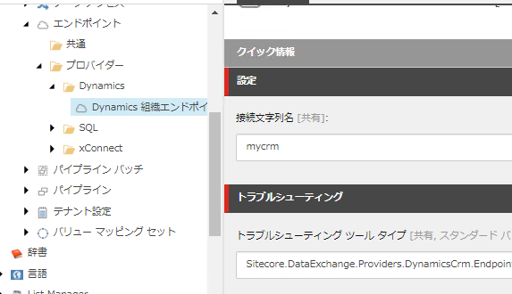
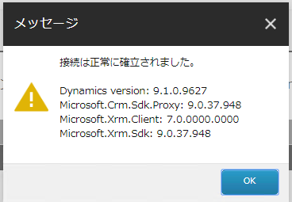

2.3. Sitecore Connect for Microsoft Dynamics 365 for Sales¶
Sitecore Experience Platform では Dynamics 365 CRM と連携するためのモジュール、Sitecore Connect for Microsoft Dynamics 365 for Sales 3.0.0 を提供しています。ここではセットアップに関しての手順を紹介しています。
2.3.1. モジュールのダウンロード¶
モジュールに関しては、Sitecore Download サイトから入手することができます。
Sitecore Data Exchange Framework 3.0.0
Data Exchange Framework
Sitecore Connect for Microsoft Dynamics 365 for Sales 3.0.0
Sitecore Connect for Microsoft Dynamics 365 for Sales
Staging Database for Sitecore Connect for Microsoft Dynamics 365 for Sales
2.3.2. モジュールのインストール¶
モジュールのインストールは以下の手順で進めていきます。
管理者の権限でログインをします
スタート画面からコントロールパネルを選択
「管理」グループにある パッケージをインストールする を選択します

まず最初に、Sitecore Data Exchange Framework 3.0.0 のファイルをアップロードします（すでにインストール済の場合は省略できます）。
{kind=link}
インストールを実行します
続いて Sitecore Connect for Microsoft Dynamics 365 for Sales のファイルをアップロードします。
{kind=link}
モジュールのインストールは完了です。
2.3.3. ステージングデータベースの追加¶
Microsoft Dynamics とマーケティングリストを同期させるためのデータベースのセットアップをします。 ファイルダウンロードの Staging Database for Sitecore Connect for Microsoft Dynamics 365 for Sales をクリックして、 Sitecore.DataExchange.Staging.dacpac のファイルをダウンロードします。
SQL Server Management Studio を起動して SQL Server に接続します。
{kind=link}
ダウンロードしたファイルを指定します。
{kind=link}
データベース名は変更せずにそのまま進めていきます。
{kind=link}
実行をするとデータベースが追加されます。これでデータベースの設定は完了です。
2.3.4. Web.config の変更¶
Web.config の configuration > runtime > assemblyBinding に以下の設定を追加します。
<dependentAssembly>
<assemblyIdentity name="Microsoft.Xrm.Sdk" publicKeyToken="31bf3856ad364e35" culture="neutral" />
<bindingRedirect oldVersion="0.0.0.0-9.0.0.0" newVersion="9.0.0.0" />
</dependentAssembly>
<dependentAssembly>
<assemblyIdentity name="Microsoft.Crm.Sdk.Proxy" publicKeyToken="31bf3856ad364e35" culture="neutral" />
<bindingRedirect oldVersion="0.0.0.0-9.0.0.0" newVersion="9.0.0.0" />
</dependentAssembly>
{kind=link}
2.3.5. Dynamics 365 for Sales を準備する¶
今回は試用版として、無料トライアルを利用しています。このサイトからアクセスをして、無料で利用できるインスタンスを用意してください。
評価版の立ち上げに関しては、他のブログとかで紹介されていますので、分からない場合は検索をしてみてください。
2.3.6. 接続文字列の作成¶
Sitecore と Dynamics 365 を接続するための接続文字列を作成して、Connectionstrings.config に設定を追加する必要があります。
ログインをした後、右上に表示されているメニューの 詳細設定 をクリックしてください。
{kind=link}
トップのメニュー項目から 設定 を開きます。表示された項目から、 カスタマイズ を選択してください。
{kind=link}
カスタマイズを開くと、開発者リソース の項目を見つけることができます。これをクリックすると、設定に必要な項目が表示されます。
{kind=link}
organization: 一意の名前
url: エンドポイント アドレス
あとは以下の情報が必要となります。
user id : ログインをするユーザーのメールアドレス
password : パスワード
上記の項目を利用して、以下の1行を作成、ConnectionStrings.config に追加してください。これで接続の準備が完了しました。
<add name="mycrm" connectionString="url=https://####/XRMServices/2011/Organization.svc;user id=####;password=####;organization=###;authentication type=2" />
2.3.7. ステージングデータベースの追加¶
上記の接続文字列と同じく、ステージングデータベースに関する情報も ConnectionStrings.config に追加する必要があります。
ここでは以下のように追加してください（ユーザー名、パスワードは変更してください）。
<add name="Sitecore.DataExchange.Staging" connectionString="Data Source=(local);Initial Catalog=Sitecore.DataExchange.Staging;User ID=username;Password=password" />
2.3.8. xConnect との接続¶
続いてモジュールをインストールしたあと、xConnect との連携に関する手順を追加します。コンテンツエディタを開いて、 sitecore/system/Settings/Data Exchange/Providers/xConnect/Collection Models/Connect for Dynamics/Connect for Dynamics Collection Model のアイテムを選択します。
{kind=link}
選択をしたあと、メニューに表示されている モデルを JSON に変換する をクリックして JSON ファイルをダウンロードします。ダウンロードをした JSON ファイルは、xConnect のインスタンスの以下のフォルダにコピーしてください。
\App_Data\Models\
\App_Data\jobs\continuous\IndexWorker\App_Data\Models\
2.3.9. テナントの作成¶
テナントを作成するために sitecore/system/Data Exchange のアイテムを選択、右クリックをして Connect for Dynamics Tenant をクリックします。
{kind=link}
テナント名は任意で問題ありません、ここでは My Dynamics Tenant とします。
2.3.10. エンドポイントの登録¶
テナントに接続に関する情報を登録していきます。作成をしたテナントの Endpoints/Providers/Dynamics/Dynamics Organization Endpoint のアイテムを開き、mycrm を接続文字列として設定します。
{kind=link}
トラブルシューティングツールを実行して、設定が正しいことを確認します。
{kind=link}
続いて、 Endpoints/Providers/xConnect/xConnect Client Endpoint のアイテムに関して、以下の設定をします。
フィールド名 |
必須かどうか |
設定情報 |
|---|---|---|
コレクション サービス接続文字列名 |
常に必須 |
標準では xconnect.collection |
コレクション サービス証明書の接続文字列名 |
SSL が有効な場合必須 |
標準では xconnect.collection.certificate |
コレクション サービスの資格情報接続文字列名 |
認証が必要な場合は必須 |
今回は空欄 |
{kind=link}
トラブルシューティングツールを実行してください。以下のダイアログが表示されれば、接続文字列は正しい形となります。
{kind=link}
同様に、Endpoints/Providers/xConnect/xDB Reference Data Client Endpoint のアイテムに対して下記の設定をします。
フィールド名 |
設定情報 |
|---|---|
クライアント接続文字列名 |
xdb.referencedata.client |
クライアント証明書の接続文字列名 |
xdb.referencedata.client.certificate |
{kind=link}
接続の確認をするために、トラブルシューティングツールを実行してください。
{kind=link}
最後に Staging のデータベースに関する設定を確認します。テナントのアイテム Endpoints/Providers/SQL/Staging Database を開いて、接続文字列が記載されていることを確認してください。
{kind=link}
トラブルシューティングツールを実行して、接続できることを確認します。
{kind=link}
上記ですべて接続が確認できれば、設定が完了となります。
2.3.11. テナントを有効にする¶
作成したテナントを指定して、タブを「コンテンツ」に切り替えてください。

有効にしたあと、パイプラインバッチを実行してください。
{kind=link}
エクスペリエンスプロファイルにコンタクトが作成されて、同期できたことを確認できました。